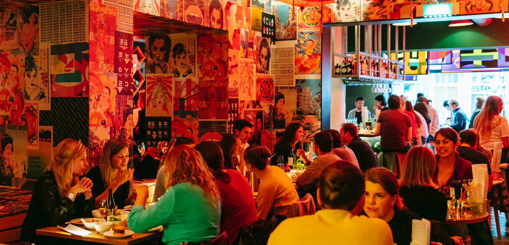
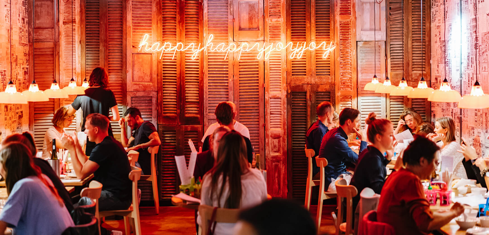
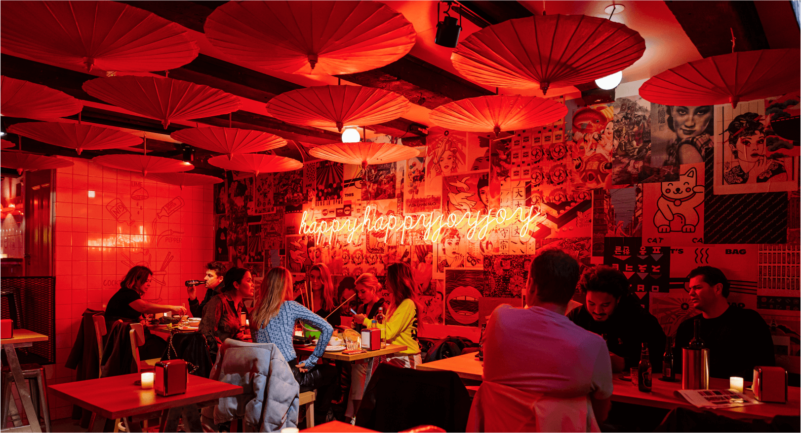
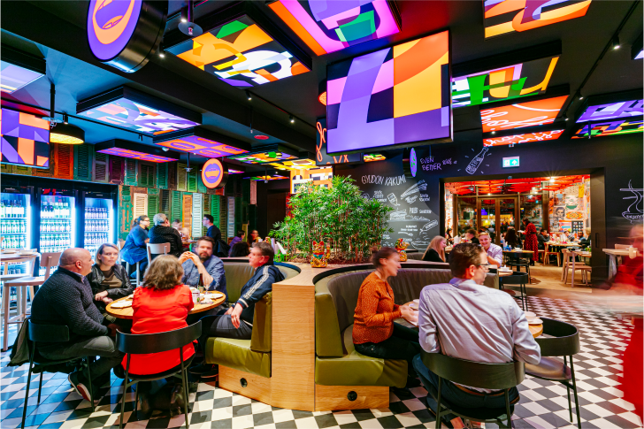

HappyHappyJoyJoy
Happyhappyjoyjoy is geboren uit liefde voor reizen naar het Verre Oosten. Stap onze wereld binnen, ervaar de chaotische straten en proef de rijke diverse smaken van de Aziatische keuken.
Amsterdam West
Amsterdam Zuid
Downtown
Zuidas
Locaties
Amsterdam West
Amsterdam Zuid
Downtown
Zuidas
De Roerige straten, rijken smaken en levendige kleuren uit Azie komen samen in Amsterdam
Onze restaurants weerspiegelen de roerige straten van Azië: een chaos van kleuren, texturen, landschappen, lichten, vrolijke designs en oog voor detail. Onze gerechten zijn net zo (di)vers en smaakvol als de alledaagse Aziatische keuken: zoet, zuur, zout en bitter zorgen voor een feest voor je smaakpapillen. Lees hier meer over onze merkwaarden.
about us
Downtown
Dineer bij Happyhappyjoyjoy Downtown middenin het centrum van Amsterdam. Stap onze wereld binnen, ervaar de chaotische straten en proef de rijke diverse smaken van de Aziatische keuken.
Lees meer
Lifestyle
Kom langs bij een van onze happy evenementen, scoor unieke happy merchandise of blader door de verhalen over ons restaurant.
Lees meer
About
Happyhappyjoyjoy is geboren uit liefde voor reizen. Stap onze wereld binnen en beland middenin de chaos van (en liefde voor) Aziatische eetkraampjes.
Lees meer
Events
Binnenkort vind je hier onze happy events. Verwacht vertier voor jong en oud met ons typische sausje van chaos en gezelligheid. Hou onze site en Facebookpagina in de gaten, to be continued